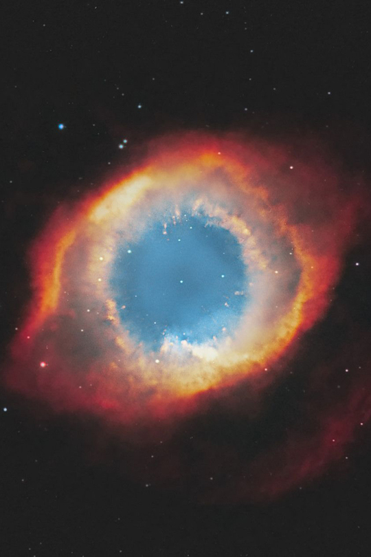
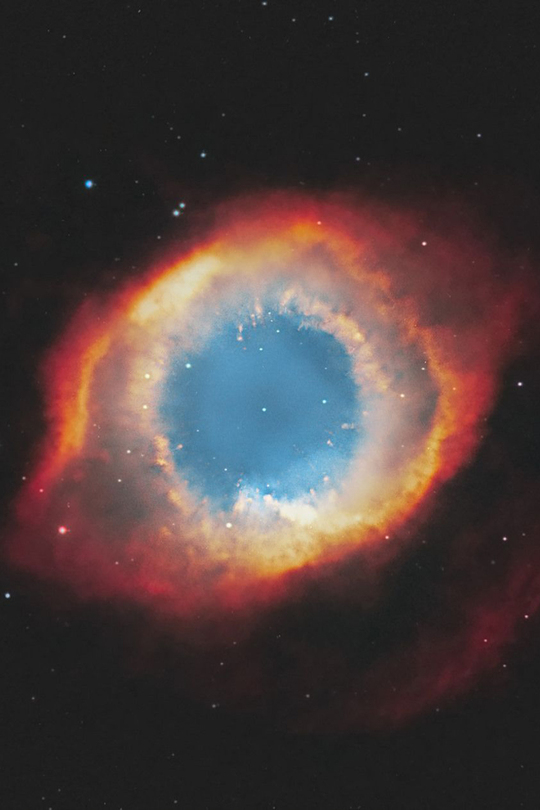
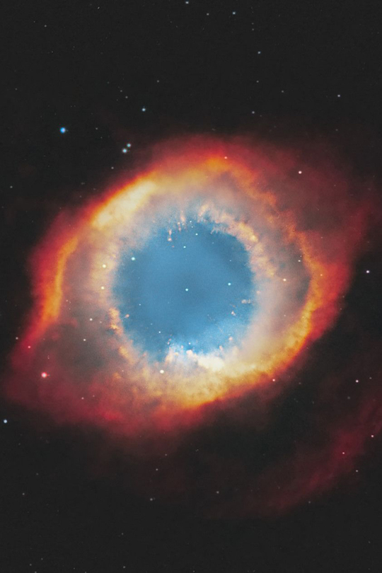
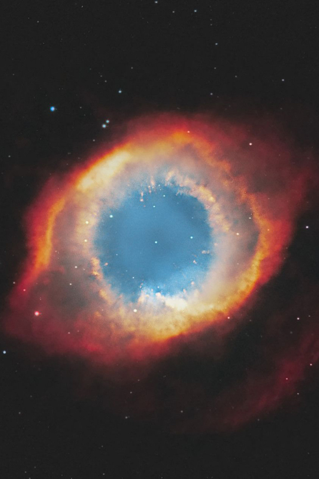

| Csillagászati naptár 2023. augusztus - 2023. december |
|
|---|---|
| Dátum | Esemény |
| Augusztus | |
| 2023. augusztus 1. | Telihold |
| 2023. augusztus 15. | Újhold |
| 2023. augusztus 30. | Este a Hold a Szaturnusz közelében látszik |
| 2023. augusztus 31. | Telihold | Szeptember |
| 2023. szeptember 4. | Éjszaka a Hold a Jupiter közelében látszik. |
| 2023. szeptember 15. | Újhold |
| 2023. szeptember 23. | Őszi napéjegyenlőség |
| 2023. szeptember 29. | Telihold | Október |
| 2023. október 1. | Éjszaka a Hold a Jupiter közelében látszik. |
| 2023. október 14. | Újhold |
| 2023. október 28. | Részleges holdfogyatkozás, hazánkból is megfigyelhető. |
| 2023. október 28. | Telihold | November |
| 2023. november 5. | Utolsó negyed, a Hold az éjszaka második felében látható |
| 2023. november 13. | Újhold |
| 2023. november 18. | Leonidák meteorzápor |
| 2023. november 27. | Telihold | December |
| 2023. december 14. | Geminidák meteorzápor |
| 2023. december 22. | Éjszaka a Hold a Jupiter közelében látszik |
| 2023. december 22. | Ursidák meteorzápor |
| 2023. december 27. | Telihold |